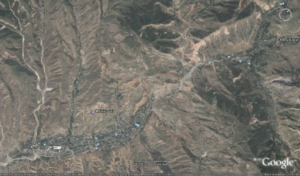
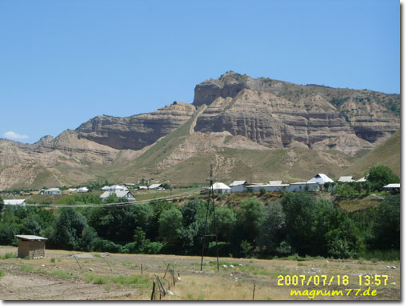
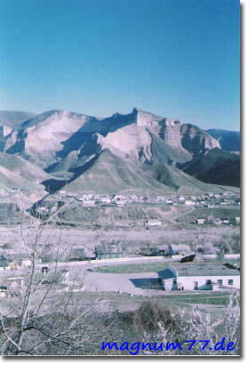

О Майли-Сае
Майли-Сай…
После того как слышишь это слово, вспоминается о чём-то родном, тёплом. Маленькая зелёная „Швейцария“, где весной всё было покрыто зеленью и цветущими садами, в конце лета и начале осени природа одаривала жителей щедрыми дарами, а зимой мягким и умеренным климатом.

Майли-Сай находится на юге Кыргызстана, в райской Ферганской долине. Он расположен в горном ущелье, имеет ширину около 2-х и длину около 11-ти километров. Город основан в конце Великой Отечественной войны. В конце семидесятых, начале восьмидесятых, численность населения составляла около 30 тысяч человек. Национальной розни не было места в городе, несмотря на то что, в нём жили русские, немцы, татары, украинцы, киргизы, узбеки, таджики и другие. Каждый Майли-Саец имел своё место под солнцем, строил своё будущее и жил интересами города.
В городе существовала мощная структура СССР. В Майли-Сае был второй по производительности в союзе Электроламповый завод (ЭЛЗ) основанный в 1965 году. В девяностых годах ЭЛЗ производил 20-25 млн. ламп накаливания в месяц, в хорошие времена на нём работало около 6 тысяч рабочих и служащих. Также был крупный завод изоляционных материалов „ИЗОЛИТ“. В „ЛИТЕЙКЕ“ отливали всевозможные изделия из различных металлов, с помощью песчаных форм. На „ЖБЦ“ производили асфальт и различные бетонные конструкции. Нельзя не упомянуть о важных для города ЖКХ, Строй-Двор, Автобаза, Гос.Администрация, Типография, ТЭЦ, ЮжСМУ, ОРС, МТС, Почтамт, овощная база, швейная фабрика, Хлебозавод и Лимонадный цех. На ЭВМ, помимо электронно-вычислительных машин, производили всем нам известные цветомузыкальные приставки. Горвенкомат и воинская часть отвечали за нашу безопасность. Система образования(ГорОНО и ДОСААФ), для 9-ти школ города, способствовали наличию Дома Пионеров, Станции Юных Техников, стадиона. СПТУ-76 и Электромеханический техникум (позже Жалал-Абадский государственный Университет) растили поколение за поколением Майли-Сайцев. Мясокомбинат напоминал о себе неповторимым запахом. Продуктовые и хозяйственные магазины снабжали нас всем необходимым.
Такой город не мог обойтись без пожарки, больницы и милиции. В Доме Культуры, павильонах ОРСа (таких как „Прохлада“), кинотеатрах, дискотеках, ресторанах „Берёзка“ и „Ала-Тоо“, люди могли отдохнуть и провести своё свободное время. Неизгладимые впечатления оставили пионерский лагерь „Горный“ и профилакторий для детей и взрослых.

Мне особенно вспоминаются ул. Киргизская, ул. Заводская, этажки, Школа №5, 27-ой магазин, СПТУ-76, базар около Дома-Быта, ул. 50 Лет ВЛКСМ, ул. Островского, район свалки и кековых полей, и конечно на весь город знаменитые озёра (по нашему Хауз). На вышеупомянутых улицах жили около 30 процентов заводчан ЭЛЗ, рабочих Изолита, ЭВМ, ЖБЦ, служб ЖКХ, а также служащих администрации, ГорОНО и воинской части. Город процветал, 27-ой был забит до отказа продуктами, Дом Быта работал в полную силу, а работники ТНП удивляли своими поделками из стекла, весь город.

Надеюсь, что я ничего не упустил и каждый, прочитавший статью, вспомнил для себя что-то родное.
В конце 80-х годов случилось нечто, из-за чего большинство Майли-Сайцев потеряли не только свой город, но и родину. Промышленный и хозяйственный кризис, который образовался с распадом СССР, способствовал ухудшению жизнедеятельности города, снижению уровня жизни жителей. Горожане стали разъезжаться по разным частям света в поисках лучшей жизни. Теперь наших земляков можно встретить не только в разных городах, но и в разных странах по всему миру, таких как Россия, Германия, Израиль, Украина, Казахстан, Крым, Молдавия и т.д.
Но что-бы ни произошло, мы навсегда останемся Майли-Сайцами, в нашей памяти есть место этому городу. Каждый из нас когда-то оставил или потерял земляка, или любимого человека из города. На этой странице, предоставлена ещё одна возможность найти своих друзей, давних знакомых, которых в силу обстоятельств мы потеряли.
Вы можете оставить свои контактные данные (email-адрес, имя, фамилию), и фамилии тех людей которых Вы ищете, на форуме майли-сайцев. Посетители, прочитав их, смогут отправить Вам интересующую Вас информацию.
Мне остаётся пожелать Вам удачного поиска и общения на этом сайте.
Оставить коментарий
Главная/ МАЙЛИ-САЙ

 У вас есть замечания/предложения?
У вас есть замечания/предложения?